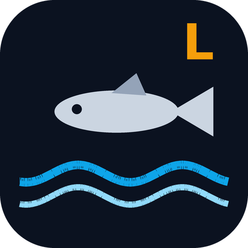
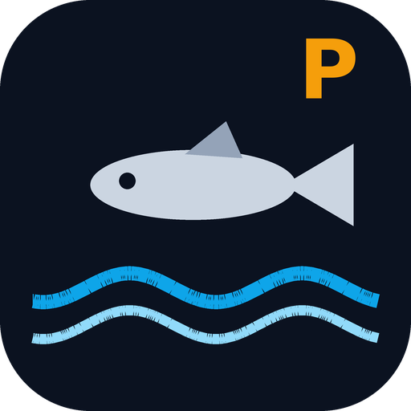

Guides de pêche du bar
Marée calculée sur l'appareil · météo AROME et houle par spot · carte · réglementation · journal de session.

Logonna-DaoulasRade de Brest · 11 spots, du fond de rade au goulet

Pirou PlageCôte ouest du Cotentin · 10 spots, de Granville à Goury